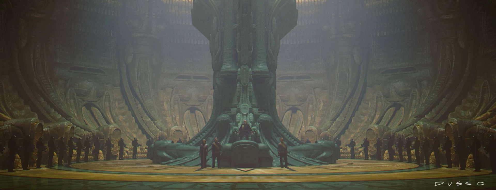
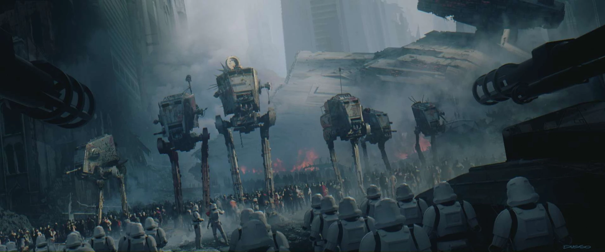
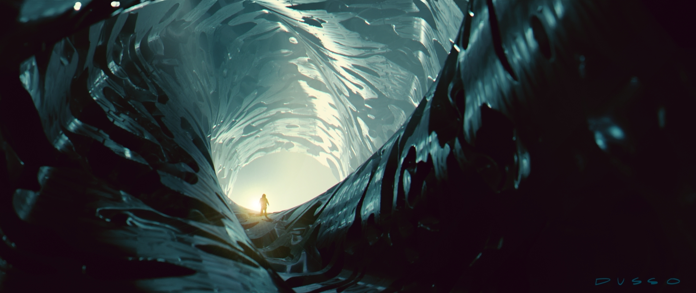
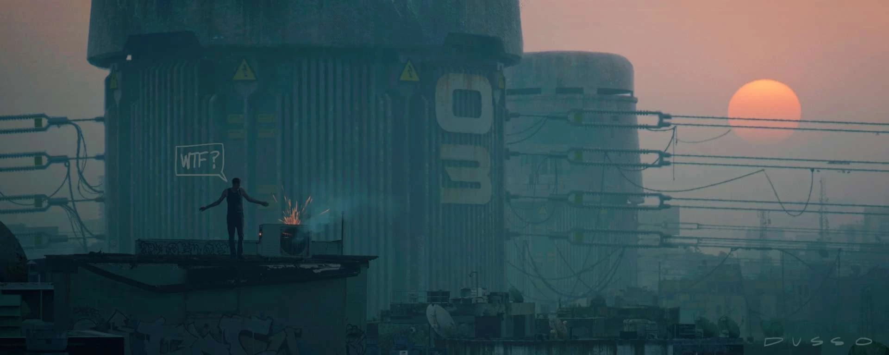
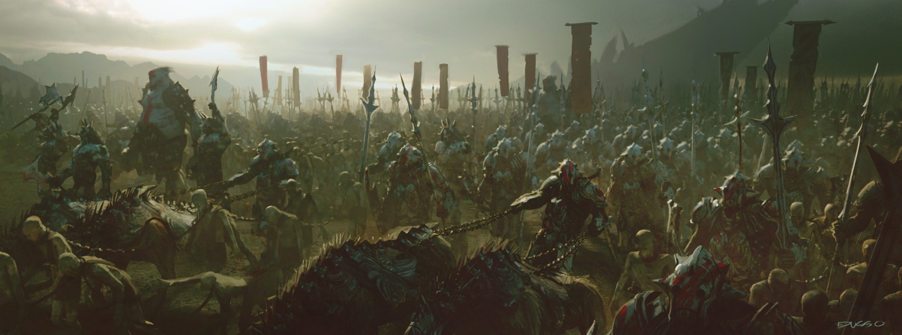
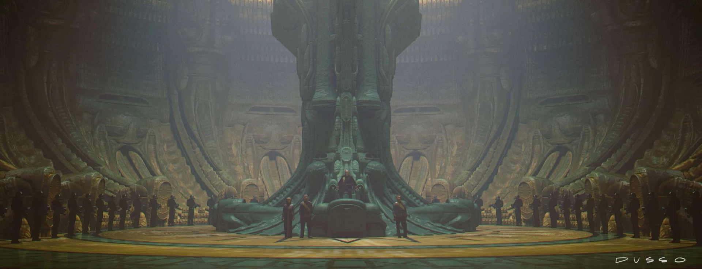
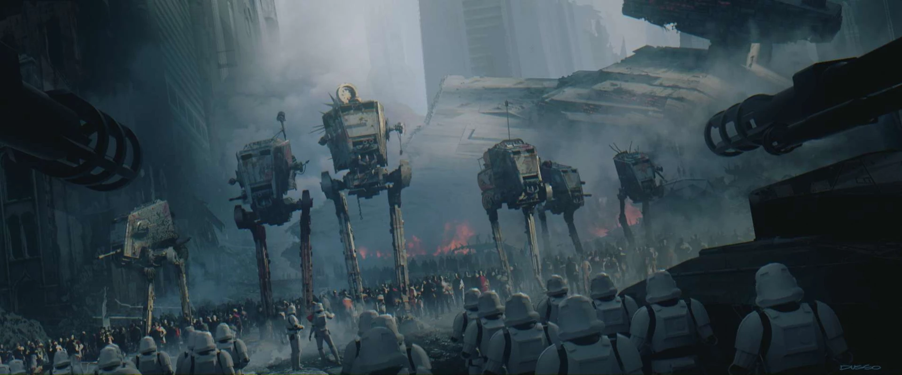
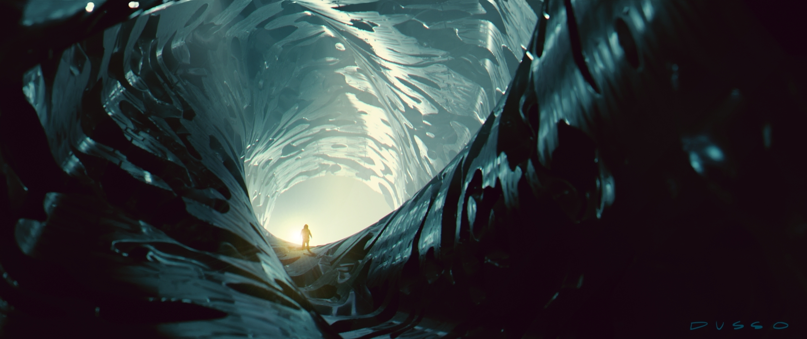
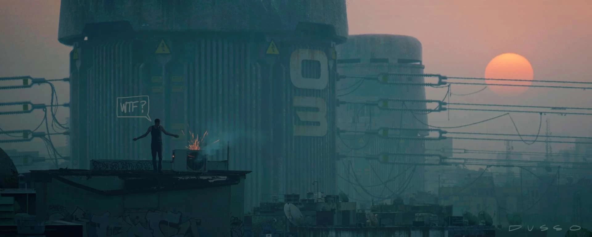
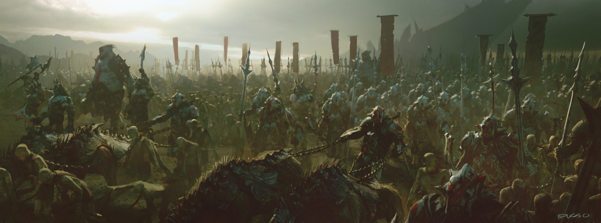

Yanick Dusseaul
Conosciuto anche come Dusso, è uno dei più grandi artisti digitali dell'industria cinematografica. Specialista in concept art , matte painting e 3D. Ha studiato illustrazione tecnica prima di entrare nel mondo degli effetti digitali. Oggi il suo nome fa parte di produzioni come Transformers , Star Trek , Indiana Jones: Il regno del teschio di cristallo) , La guerra dei mondi , Star Wars: Episodio III , Pirati dei Caraibi , Terminator III , Le due torri , Titan AE ...tra molti altri
 








